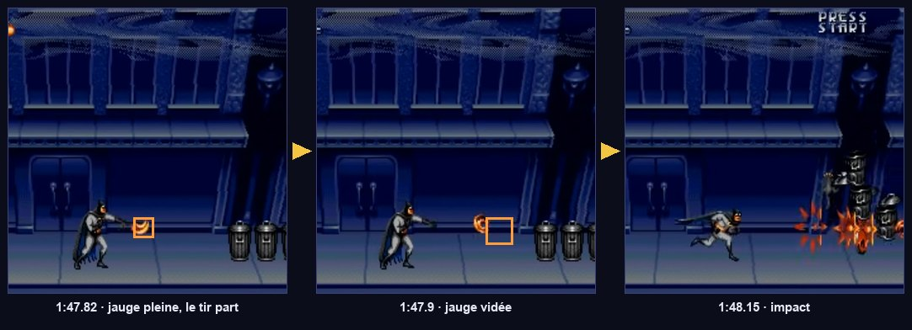

Armes, charge & bonus
Trois armes décrites par des données, une jauge qui se remplit quand on ne tire pas, des bonus qui changent de couleur, un crâne qui nettoie l'écran. Et une réserve de projectiles qui imite la limite de sprites de la console.
Les règles réelles

| Couleur du bonus | Arme | Caractère (TASVideos) |
|---|---|---|
| Rouge / orange | Batarang | Tir dispersé : plus de projectiles en éventail quand le niveau monte |
| Vert | Bolas | Pas de dispersion, mais les plus gros dégâts par projectile |
| Bleu | Shuriken | L'arme la plus faible |
- Niveau d'arme : ramasser la couleur déjà en main fait monter l'arme d'un niveau, jusqu'à 7.
- Jauge de charge : la barre sous le score se remplit seule en ~1,1 s quand on ne tire pas (1:46.5 → 1:47.6). Le tir suivant est un tir puissant et la vide. Selon TASVideos, un tir puissant peut toucher des ennemis hors de l'écran.
- Bonus d'arme : un disque au logo chauve-souris dont la couleur tourne environ chaque seconde ; c'est la couleur au moment du contact qui compte (1:48, 8:40, 12:30).
- Crâne : roule au sol vers le joueur. Le toucher déclenche un flash blanc et détruit tous les ennemis à l'écran (2:06, 12:24).
- Bonus de charge : remplit instantanément la jauge (TASVideos).
Ni « laser rouge », ni « shurikens verts », ni « bolas bleus à tête chercheuse », ni charge en maintenant le bouton (doc A). Les couleurs, les rôles et le mécanisme de charge ci-dessus sont ceux du jeu.
L'effet précis de chaque niveau (nombre de projectiles, dégâts, cadence) et le comportement lors d'un changement de couleur ne sont documentés nulle part. Les valeurs ci-dessous sont des hypothèses raisonnables, entièrement dans des fichiers .tres : tu les ajustes dans l'inspecteur, sans toucher au code. Hypothèse retenue : changer de couleur ramène l'arme au niveau 1.
Une arme = un fichier de données
Les trois armes partagent le même comportement (tirer N projectiles à telle vitesse, avec tels dégâts) ; seuls les chiffres changent. On écrit donc le comportement une fois, et chaque arme devient une Resource éditable dans l'inspecteur. Ajouter une quatrième arme ne demande aucune ligne de code.
Crée les trois ressources (clic droit dans res://weapons/data/ → Nouvelle ressource → WeaponData) avec ces valeurs de départ :
| Champ | batarang.tres | bolas.tres | shuriken.tres |
|---|---|---|---|
| color | #ff6b3d | #43d18f | #5aa8ff |
| speed | 300 | 260 | 360 |
| fire_interval | 0.16 | 0.22 | 0.10 |
| count_by_level | 1, 2, 3, 3, 4, 4, 5 | 1, 1, 1, 1, 1, 1, 1 | 1, 1, 2, 2, 2, 3, 3 |
| damage_by_level | 1, 1, 1, 2, 2, 2, 3 | 3, 3, 4, 4, 5, 5, 6 | 1, 1, 1, 1, 1, 2, 2 |
| spread_deg | 12 | 0 | 6 |
| projectile_scale | 1.0 | 1.0 (agrandi par le niveau en option) | 0.8 |
| power_count / power_damage | 5 / 6 | 1 / 16 (power_scale 2.5) | 8 / 3 |
La réserve de projectiles
Pool. (vidéo 12:24)La console affiche au plus 80 sprites, dont 20 par ligne. Les jeux réservent donc un nombre fixe d'emplacements pour les tirs du joueur. Quand ils sont tous pris, le bouton ne fait rien. C'est l'ancêtre exact du pooling.
Créer et détruire des nœuds en rafale (instantiate() puis queue_free()) coûte des allocations et des insertions dans l'arbre de scène. On fabrique les projectiles une fois, au chargement, puis on les « endort » et on les « réveille ». La clé pour une Area2D : process_mode = DISABLED. Avec le réglage par défaut disable_mode = REMOVE, Godot la retire aussi de la simulation physique. Un simple hide(), comme dans l'ancienne doc B, laisse la zone active : un batarang « rangé » blesse encore.
Le projectile
Un projectile est une Hitbox qui se déplace : il hérite donc de tout le système de dégâts du tome 02. La même scène sert aux tirs ennemis : il suffit de changer son masque de collision.
Projectile (Area2D, projectile.gd) couche aucune · masque 6 (hurtbox_ennemis) ├── Sprite2D ├── CollisionShape2D cercle de rayon 5 └── VisibleOnScreenNotifier2D
Le WeaponSystem : tir, niveaux et jauge


Le bonus ne connaît pas le WeaponSystem, et le HUD ne connaît pas Batman. Le bonus dit à Game « l'arme est maintenant bolas niveau 3 » ; Game émet weapon_changed ; le WeaponSystem et le HUD (tome 10), qui s'y sont abonnés, se mettent à jour. Chacun peut être supprimé ou remplacé sans casser les autres.
Les bonus
Base commune : un objet qui tombe et se ramasse
Pickup (CharacterBody2D) couche aucune · masque 1+2 : il tombe et se pose
├── Sprite2D
├── CollisionShape2D petit rectangle
└── Area2D couche 7 « bonus » · masque 3 « corps_joueur »
└── CollisionShape2D
Le bonus d'arme à couleur cyclique
C'est un mini-jeu de timing : le joueur doit toucher le bonus au bon moment pour avoir l'arme voulue. Une seule variable (_index) et un compteur suffisent. Le visuel (la couleur) n'est qu'une conséquence de l'état, recalculée par _refresh() : on ne stocke jamais deux fois la même information.
Le crâne smart bomb et le bonus de charge

global_position avant add_child()Un nœud fraîchement instancié n'a pas encore de parent. Si on écrit n.global_position = p puis parent.add_child(n), Godot range p dans position (local), et le nœud apparaît décalé de la position du parent. Tant que le parent est à l'origine, rien ne se voit ; avec un parent placé ailleurs (l'arène d'un boss, un PathFollow2D), l'objet surgit à des centaines de pixels. Fx.spawn() règle le problème une fois pour toutes. Tous les tomes suivants l'utilisent pour faire apparaître bombes, explosions, bonus et ennemis.
Le crâne ne sait pas quels ennemis existent. Il demande au SceneTree « donne-moi tous les nœuds du groupe enemies ». Chaque ennemi s'ajoute lui-même au groupe à sa création (tome 05). C'est le même mécanisme que get_first_node_in_group("player").
Brancher le tout sur Batman
- Crée
projectile.tscn(arbre ci-dessus) avecprojectile.gd, masque 6. - Ajoute un nœud
WeaponSystemàplayer.tscn, avecprojectile_scene=projectile.tscn.player.gdle trouve tout seul grâce àget_node_or_null("WeaponSystem"). - Crée
weapon_pickup.tscn,skull_bomb.tscnetcharge_pickup.tscnà partir de la basePickup. - Crée
explosion.tscn: unAnimatedSprite2Davec une animationdefaultnon bouclée etexplosion.gd.
- Maintenir l'attaque tire en rafale, dans 8 directions, à la cadence de l'arme.
- Sans tirer pendant ~1,3 s, la jauge se remplit (vérifie
charge_changeddans le débogueur) ; le tir suivant est gros, coloré et traverse les cibles. - Un bonus posé au sol change de couleur chaque seconde ; le ramasser change l'arme ou augmente son niveau.
- Plus de 24 projectiles à l'écran est impossible : le bouton ne fait plus rien tant qu'un emplacement ne se libère pas.